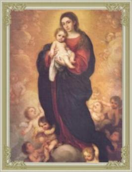
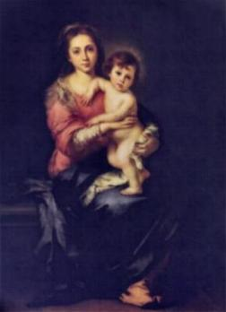
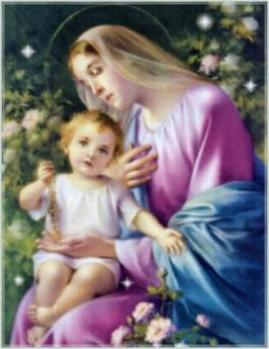

- JOSÉ,
MARIA e JESUS, receberam a
visita dos três Reis Magos que vieram do Oriente, orientados por
uma estrela do SENHOR, para adorar o
MENINO-DEUS.
- JOSÉ,
MARIA e JESUS, receberam a
visita dos três Reis Magos que vieram do Oriente, orientados por
uma estrela do SENHOR, para adorar o
MENINO-DEUS.
Herodes Magno, Governador da Judéia, ao saber pelos escribas e sábios da corte, da presença dos orientais e que o "Rei dos Judeus" segundo a Escritura Sagrada nasceria em Belém, ficou com ciúmes e em sua mente doentia nasceu o medo de perder o poder. Perverso e de má índole, planejou matar JESUS. Convidou os Magos à visitá-lo e ensinou-lhes o caminho para Belém, fazendo-lhes uma solicitação: "quando retornassem, deixassem com ele o endereço do MENINO, porque ele também desejaria adorá-LO." Entretanto, depois que estiveram com a Sagrada Família, os Magos foram avisados em sonho pelo Anjo do SENHOR sobre as intenções de Herodes e por isso, retornaram à sua pátria pela estrada de Hebron, não voltando a Jerusalém para informar ao terrível governante, onde estava o MENINO-DEUS.
Da mesma maneira, a Sagrada Família também foi avisada em sonho, que Herodes mandaria uma guarnição militar a Belém para eliminar JESUS. Por isso, foram recomendados a fugirem para o Egito e lá eles deveriam permanecer até a morte do Governador.
Herodes ao saber que os Magos tinham
retornado ao Oriente, sem avisá-lo, ficou enfurecido. Mandou uma patrulha
de soldados a Belém, com a ordem de matar todas as crianças com menos de
dois anos de idade, com a intenção de matar JESUS. Então aconteceu
o abominável e covarde massacre de inocentes, com a morte de centenas
de crianças, que se tornaram os primeiros mártires da Igreja (eles
perderam a vida no lugar do Redentor). (Mt 2,16-17)
Seis meses após, JOSÉ,
MARIA e JESUS, foram novamente avisados pelo Anjo
do SENHOR, de que Herodes tinha morrido e que eles poderiam
retornar à pátria. Eles pretendiam regressar à Belém, mas foram prevenidos
que o sucessor de Herodes Magno no Governo da Judéia era o filho Arqueláu,
tão cruel e maldoso como o pai. Por esse motivo, decidiram
voltar à Nazaré. Naquele pequeno lar em Nazaré da Galiléia
puderam finalmente cultivar tranquilamente a vida familiar. JESUS
aprimorava-se no aprendizado de carpinteiro, ajudando JOSÉ
de maneira tão eficiente como só ELE sabia fazer. Não
é difícil imaginar os diálogos que normalmente ocorriam, na
sequência dos afazeres cotidianos: "Filho, vai ao mercado e compre uma lâmina
nova para a serra; também uma porção de cravos e uma talhadeira.
Ao regressar, passe na casa do Ezequiel e veja se ele está melhor
da saúde, dê-lhe o meu abraço e os votos de pronta recuperação".
E por certo, as coisas aconteciam assim,
JOSÉ e MARIA viviam dedicados ao trabalho,
mas também mergulhados profundamente no Mistério de JESUS.
Eles nunca duvidaram da veracidade das promessas de DEUS,
mesmo diante das dificuldades que surgiam no cotidiano e na rotina
dos dias sempre misteriosa para eles, mas repleta de felicidade.
Da mesma forma, como acreditamos na presença do SENHOR
JESUS na Hóstia Consagrada, eles também acreditavam na
presença de DEUS, no Filho que lhes fora confiado.
Afinal um mistério exige Fé e não
entendimento.
VIDA PÚBLICA DE JESUS

 PAI ETERNO e
partiu para a eternidade. Assim, ELE decidiu que
estava na hora de começar a cumprir a fase decisiva da sua
Divina Missão.
PAI ETERNO e
partiu para a eternidade. Assim, ELE decidiu que
estava na hora de começar a cumprir a fase decisiva da sua
Divina Missão.
Foi ao encontro de João Batista, que realizava um Batismo de Penitência no rio Jordão, próximo ao Mar Morto, preparando o povo para chegada do Messias. JESUS num gesto de extrema humildade, assumiu a aparência de um simples pecador, e depois de insistir, foi batizado por Batista, numa demonstração de obediência ao CRIADOR e de amor a humanidade. Na continuidade dos meses, chamou os Discípulos e escolheu os 12 Apóstolos, que foram testemunhas de sua Obra e Ressurreição. Com o maior empenho e a grandeza de um incomensurável amor, executou de maneira admirável a Obra que o PAI ETERNO lhe confiou.
Os judeus, de um modo geral, esperavam que o Messias fosse um rei forte, um grande e destemido guerreiro, para libertar Israel do jugo romano e arrasar todas as nações que ao longo dos anos trouxeram ruína à pátria. Sonhavam e imaginavam seu país com um grande poderio militar, destruindo os inimigos e ocupando territórios, tornando-se uma nação respeitada, construindo o futuro com as notáveis conquistas e vitórias do seu Rei.
Contudo, verdadeiramente o Messias veio, não aquele sanguinário e estrategista, mas um outro muito diferente, que usava armas que eles não conheciam, porque veio ensinar o amor e a construir uma defesa contra o maligno.
JESUS repudia a guerra contra Roma, quando define: "Daí a César o que é de César"... (Mc 12,17); JESUS destrói o reino de Satanás, afugentando os demônios e todos espíritos impuros, que torturavam os possuídos, incita o respeito às Leis, a prática do bem, da justiça, da retidão de comportamento e da obediência aos Mandamentos de DEUS.
ELE se fez ouvir nas sinagogas, lendo textos bíblicos e explicando-os de modo autêntico, com uma linguagem simples, fácil e admirável, encantando a todos. Falava com uma autoridade que os escribas e fariseus estavam muito longe de a possuir, e fazendo o bem, mesmo de modo discreto e natural, ficava em evidência com os exorcismo que operava e pela quantidade notável de milagres que fazia, curando doentes, recuperando a visão aos cegos, restituindo a saúde à todos que O procuravam. Por isso o povo começou a se agitar, todos queriam segui-LO para onde fosse, invocando o nome do Messias e agradecendo a DEUS pela presença Daquele Notável Enviado.
Não obstante, a maioria do povo
judeu permanecia firme em sua convicção, esperando um Messias que
fosse um grande Chefe político e militar. E por isso, diante da
realidade  de JESUS,
começaram aparecer os descontentes, os fracos e incapazes,
que não tem persistência nos ideais, os comodistas que não tem
ânimo para praticar os esforços que a doutrina do SENHOR
exigia. Revoltam-se contra ELE, tecem intrigas e calúnias,
planejando eliminá-lo. JESUS foi preso, submetido a um
julgamento tendencioso e falso, foi barbaramente flagelado e
condenado a morrer na cruz. Silenciosamente sofreu todas as
injúrias, as blasfêmias e os maus tratos, como se aqueles atos
fizessem parte do normal processo de condenação. E procedeu
assim, pela grandeza da sua misericórdia e por sua perseverante
e heróica obediência ao PAI ETERNO objetivando
levar o cumprimento de sua missão até o fim. ELE assumiu
todos os pecados da humanidade, os acontecidos anteriormente
e todos aqueles que foram praticados até em sua época, e como
um desprezível bandido, morreu crucificado entre dois ladrões.
Todavia o CRIADOR O Ressuscitou e colocou na glória
eterna o FILHO dileto que dignamente cumpriu a sublime
missão de Redimir e Salvar todas as gerações, deixando meios
eficazes para cada pessoa santificar a sua existência, ser feliz
nesta vida e alcançar a eternidade.
de JESUS,
começaram aparecer os descontentes, os fracos e incapazes,
que não tem persistência nos ideais, os comodistas que não tem
ânimo para praticar os esforços que a doutrina do SENHOR
exigia. Revoltam-se contra ELE, tecem intrigas e calúnias,
planejando eliminá-lo. JESUS foi preso, submetido a um
julgamento tendencioso e falso, foi barbaramente flagelado e
condenado a morrer na cruz. Silenciosamente sofreu todas as
injúrias, as blasfêmias e os maus tratos, como se aqueles atos
fizessem parte do normal processo de condenação. E procedeu
assim, pela grandeza da sua misericórdia e por sua perseverante
e heróica obediência ao PAI ETERNO objetivando
levar o cumprimento de sua missão até o fim. ELE assumiu
todos os pecados da humanidade, os acontecidos anteriormente
e todos aqueles que foram praticados até em sua época, e como
um desprezível bandido, morreu crucificado entre dois ladrões.
Todavia o CRIADOR O Ressuscitou e colocou na glória
eterna o FILHO dileto que dignamente cumpriu a sublime
missão de Redimir e Salvar todas as gerações, deixando meios
eficazes para cada pessoa santificar a sua existência, ser feliz
nesta vida e alcançar a eternidade.
MARIA de Nazaré foi a
MÃE preciosa que o SENHOR precisava, porque
sempre esteve ao lado do FILHO, zelando por suas necessidades
e LHE dedicando os melhores carinhos maternos. Cuidava da
limpeza e do abastecimento do lar, da refeição do seu FILHO, da
sua saúde, assim como da confecção e digna apresentação das roupas que
ELE usava. NOSSA SENHORA era muito hábil e prendada
no labor artesanal. Foi Ela quem caprichosamente elaborou a túnica que
JESUS usava. São João descreve que era inteiriça, inconsútil
e tão bem acabada, que até os centuriões romanos, na
"hora da Cruz",
não quiseram dividi-la, decidiram pela sorte, quem ficaria com a posse
daquela bonita e útil vestimenta. (Jo 19,23-24)
A verdade é que MARIA, por sua admirável sensibilidade,
sempre soube estar presente nos momentos certos, para auxiliar
o seu Divino FILHO JESUS. Até nos momentos mais difíceis,
estava presente para manifestar palavras de consolo, envolvendo o
seu FILHO com uma ternura especial e o calor de seu imenso
e apaixonado amor de MÃE, que amenizava as dores
DELE, as decepções e aliviava os seus abomináveis
sofrimentos.








